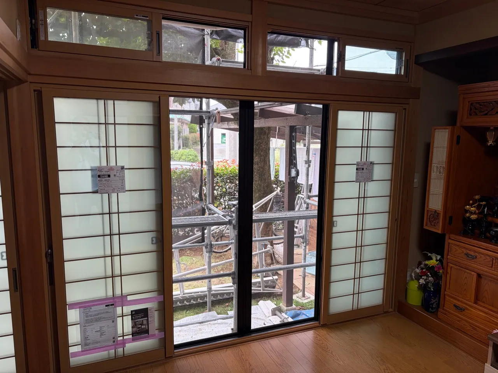
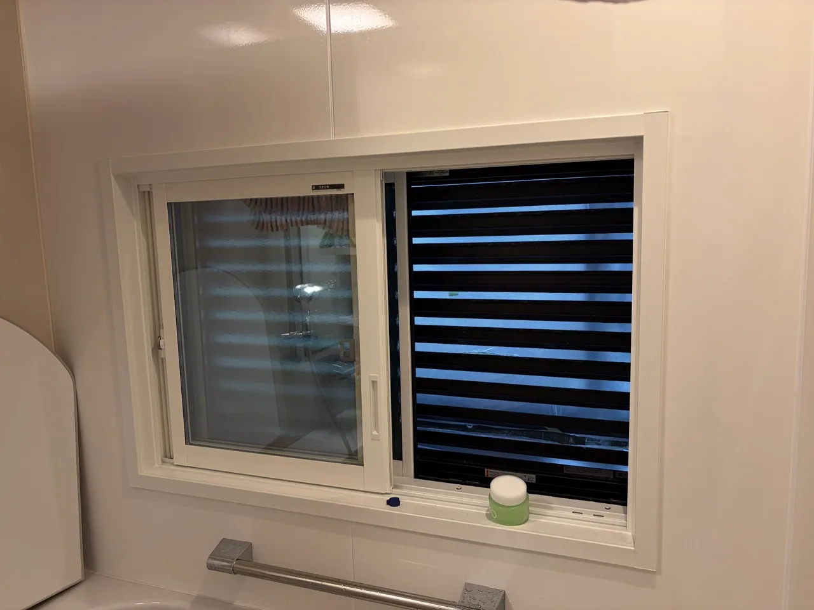
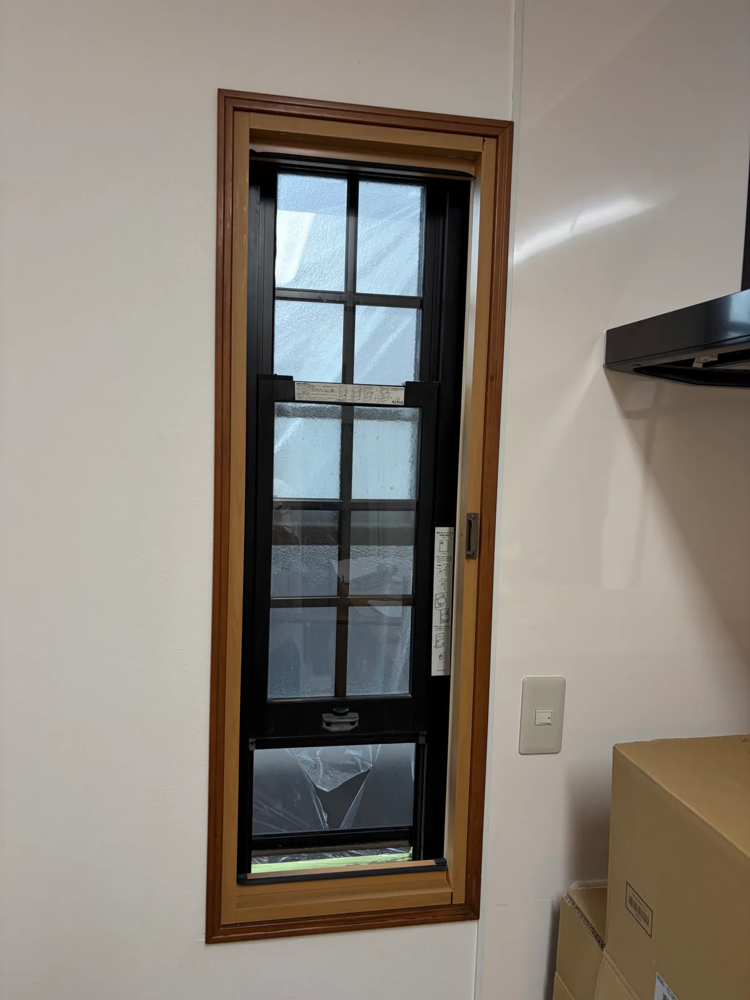
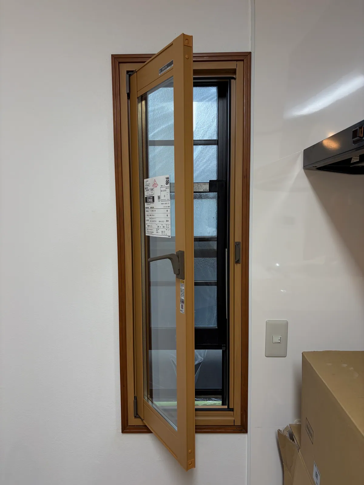
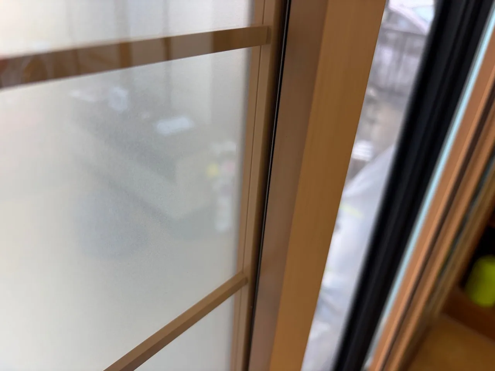

一軒まるごと、19ヶ所に内窓を取り付けました
熊谷市 ／ 和室を含むお住まい ／ 2026年9月施工

和室・浴室・キッチンを含む19ヶ所の窓に、内窓を取り付けました。内窓とは、今ある窓の内側にもう一枚取り付ける窓のことです。工事費は約200万円（税込）で、そのうち約70万円に補助金を活用しています。
窓は部屋ごとに大きさも開き方も違います。和室の大きな掃き出し窓には、部屋の雰囲気に合う格子入りのガラスを選びました。キッチンの縦長の窓には、内側に開くタイプの内窓を取り付けています。Real Makeとして初めて設置したタイプで、いつもとは取付け方法が違いました。
| 所在地 | 埼玉県熊谷市 |
|---|---|
| 工事内容 | 内窓取付け 19ヶ所（和室・浴室・キッチンの窓を含む） |
| 工事費 | 約200万円（税込） |
| 補助金 | 約70万円 補助金の額は、工事の内容や申請の条件によって変わります。 |
| 施工時期 | 2026年9月 |




もとの窓と内窓のあいだに空気の層ができ、外の暑さ・寒さや音が室内に伝わりにくくなります。
窓が二重になることで、外の熱が入りにくく、室内の熱も逃げにくくなります。
道路や近所の音が室内に届きにくくなります。
窓が二重になるぶん、外から開けるのに手間がかかります。最近は防犯を理由にしたご相談が増えています。
内窓は、補助金の対象になる場合があります。使える制度や条件は時期と製品によって変わるため、お見積りのときに確認してお伝えします。
「この部屋が寒い」「外の音が気になる」「窓の防犯が心配」といった、困っていることを教えてください。気になる窓の写真をLINEで送っていただければ、内窓が付けられるかどうかからお答えします。写真がなくても、お電話で状況をうかがえます。